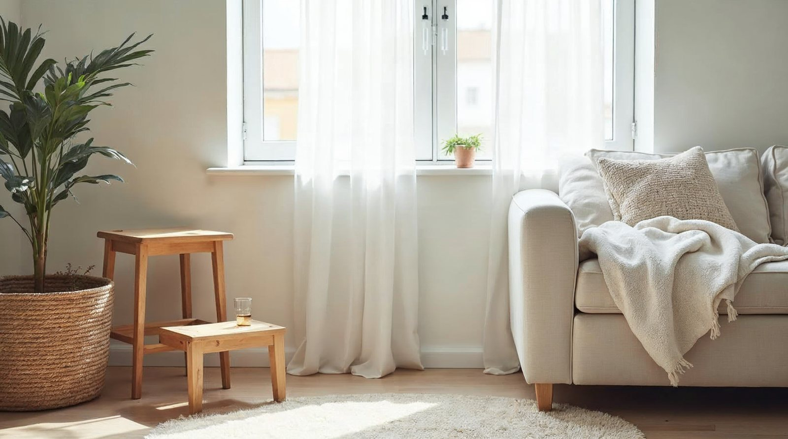
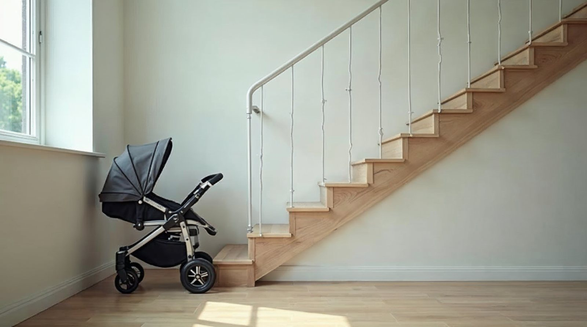
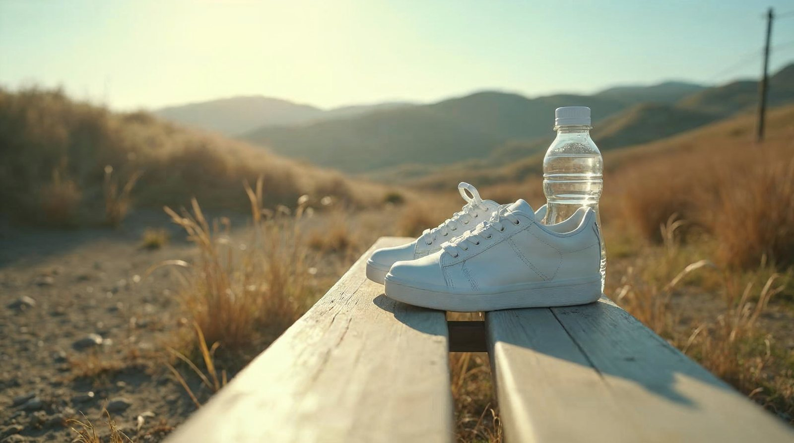
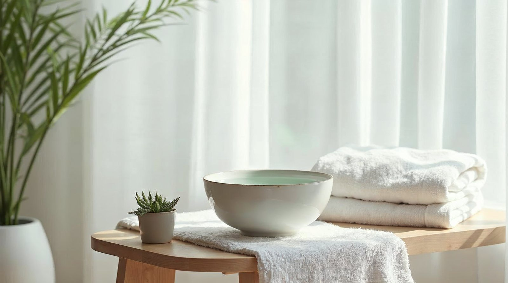
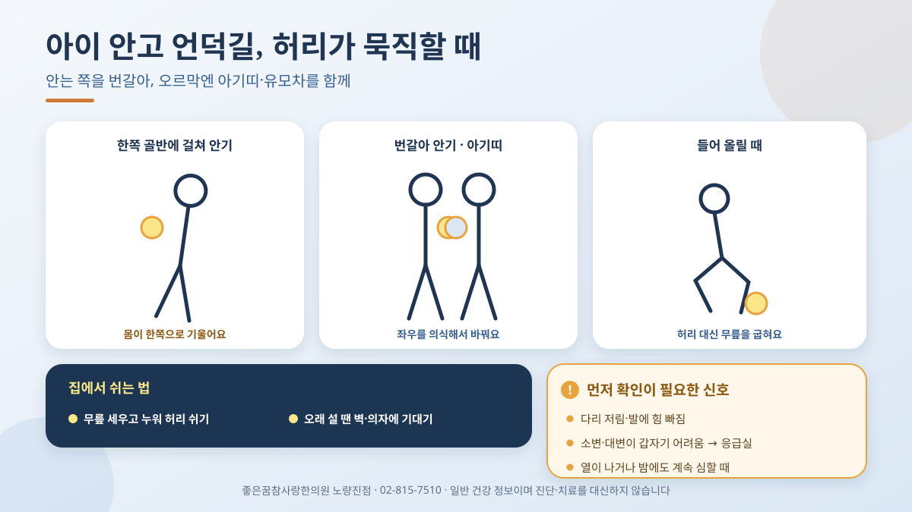

이종호 한의사 감수좋은꿈참사랑한의원 대표원장 (한의사 면허번호 19769)발행 2026-11-24 · 수정 2026-11-26
이 글의 차례
- 왜 이런 불편이 생길 수 있나요
- 왜 한쪽 허리와 엉덩이가 먼저 묵직해질까요
- 먼저 이렇게 여쭙니다
- 일상에서 먼저 해 볼 수 있는 것
- 상황별 예시
- 스스로 점검해 보세요
- 비슷한 불편과 어떻게 구분하나요?
- 등하원길, 이렇게 나눠 보세요
- 한의원에서 함께 살필 수 있는 경우
- 허리와 골반을 위한 가벼운 동작은 어떻게 하나요?
- 집 안에서 아이를 돌볼 때도 살펴보세요
- 진료를 받는 동안에는 어떻게 지내면 좋을까요?
- 가족과 돌봄을 나눌 때도 살펴보세요
- 첫 진료 전에 무엇을 준비하면 좋을까요?
- 얼마나 지켜보고 언제 상담할까요
- 이렇게 기록해 오시면 상담이 쉬워집니다
- 다시 묵직해지지 않으려면 무엇을 챙길까요?
- 이런 증상은 먼저 확인이 필요합니다
- 관련 글
아이를 한쪽 골반에 걸쳐 안고 언덕길을 자주 오르내린다면, 안는 쪽을 번갈아 바꾸고 오르막에서는 아기띠나 유모차를 함께 쓰는 것부터 권합니다. 상도동처럼 언덕이 많은 동네에서 등하원길에 아이를 안고 걷다 보면 저녁마다 허리와 엉덩이 한쪽이 묵직하다는 부모님이 많습니다.
안는 방법과 쪽을 바꾸면 허리와 골반에 몰리던 부담을 나눌 수 있는 경우가 많지만, 2~3주가 지나도 같은 쪽이 계속 아프거나 아침에 허리를 펴기 어려운 날이 늘었다면 한 번 살펴보시는 것이 좋습니다.
왜 이런 불편이 생길 수 있나요
- 아이를 한쪽 골반에 걸치면 몸이 반대쪽으로 기울어 허리와 골반 한쪽에 부담이 몰립니다.
- 오르막에서는 몸을 앞으로 숙이며 허리 근육이 더 오래 버팁니다.
- 내리막에서는 앞으로 쏠리지 않으려고 허리를 뒤로 젖히며 버티게 됩니다.
- 아이를 들어 올릴 때 허리만 숙이면 부담이 커집니다.
- 아이 몸무게는 늘어도 안는 방법은 그대로인 경우가 많아 같은 습관에 부담만 커집니다.
- 한 손으로 아이를, 다른 손으로 가방이나 장바구니를 들면 허리와 손목이 함께 지칩니다.
- 출산 뒤 몸이 회복되는 시기와 잠 부족이 겹치면 피로가 더 쌓입니다.
왜 한쪽 허리와 엉덩이가 먼저 묵직해질까요
아이를 한쪽 골반에 걸치면 그 무게를 받치려고 골반이 옆으로 밀려 나가고, 허리는 반대쪽으로 휘어 균형을 잡습니다. 이때 허리 옆과 엉덩이 바깥쪽 근육이 계속 버티게 됩니다.
이런 자세는 잠깐은 편하지만, 매일 같은 쪽으로 되풀이되면 한쪽 근육만 지치고 반대쪽은 덜 쓰이는 차이가 생깁니다. 저녁마다 같은 쪽이 묵직하다는 이야기가 나오는 까닭입니다.
출산 뒤에는 배와 골반을 받치는 근육의 힘이 돌아오는 데 시간이 걸려, 허리 근육이 그 몫까지 떠안기 쉽습니다. 그래서 허리만이 아니라 배와 골반의 힘도 함께 봅니다.
먼저 이렇게 여쭙니다
- 아이를 주로 어느 쪽으로 안으시나요?
- 하루에 아이를 안고 걷는 시간이 얼마나 되나요?
- 허리를 숙였다 펼 때와 오래 서 있을 때 중 언제 더 불편한가요?
- 엉덩이나 다리 쪽으로 당기거나 저린 느낌이 있나요?
- 손목이나 어깨도 함께 불편한가요?
- 출산하신 지 얼마나 되었나요?
- 다시 오신 분께는 지난번 이후 안는 쪽과 아기띠 사용이 어땠는지부터 이어서 여쭙니다.

일상에서 먼저 해 볼 수 있는 것
- 안는 쪽을 의식해서 번갈아 바꾸기
- 골반에 걸치기보다 몸 가운데 가깝게 붙여 안기
- 오르막에서는 아기띠나 유모차를 함께 쓰기
- 아기띠는 허리 벨트를 골반 위에 맞추고, 어깨끈은 아이가 가슴 가까이 오도록 조절하기
- 아이를 들어 올릴 때 허리만 숙이지 말고 양발을 벌리고 무릎을 굽혀 앉았다 일어나기
- 잠들기 전 무릎을 세우고 누워 허리를 바닥에 편하게 붙이고 쉬기
- 아이를 안고 오래 서 있어야 할 때는 벽이나 의자에 기대 쉬기
상황별 예시
- 예를 들어 등하원길 언덕에서 아이를 늘 오른쪽 골반에만 걸쳐 안는 부모의 경우, 저녁이 되면 한쪽 허리나 엉덩이가 묵직하다고 느낄 수 있습니다. 하원길만이라도 아기띠를 쓰거나, 오르막 구간을 반으로 나눠 안는 쪽을 바꿔 보는 것부터 해 볼 수 있습니다.
- 예를 들어 출산 뒤 몇 달이 지나 복직을 앞둔 부모의 경우, 잠이 부족한 채로 아이를 안고 언덕을 오르내리다 보면 허리뿐 아니라 손목과 어깨까지 함께 지칠 수 있습니다. 허리만이 아니라 잠과 하루 일과를 함께 살펴 부담을 나눌 수 있는 시간을 찾아봅니다.
- 예를 들어 퇴근 뒤 아이를 안고 장바구니까지 들고 오르막을 오르는 부모의 경우, 한쪽 손목과 반대쪽 허리가 함께 아플 수 있어 장보기를 배달로 돌리거나 유모차에 짐을 싣는 방법을 함께 이야기해 봅니다.

스스로 점검해 보세요
- 아이를 늘 같은 쪽 골반에 걸쳐 안는다
- 저녁이 되면 허리나 엉덩이 한쪽만 묵직하다
- 아이를 바닥에서 들어 올릴 때 허리만 숙인다
- 아침에 일어나 허리를 펴는 데 시간이 걸린다
- 손목이나 어깨도 함께 시큰하다
- 엉덩이에서 다리 쪽으로 당기거나 저린 느낌이 있다
앞의 다섯 가지는 안는 방법부터 바꿔 볼 신호입니다. 마지막 항목은 허리에서 다리로 이어지는 신경 쪽 신호일 수 있어 진료 때 먼저 말씀해 주세요.
비슷한 불편과 어떻게 구분하나요?
허리와 골반 주변 불편도 아픈 위치와 함께 오는 증상에 따라 살피는 방향이 달라집니다.
- 허리 한쪽과 엉덩이가 묵직하고 쉬면 덜하다면, 한쪽으로 버티는 자세에서 오는 근육 피로를 먼저 생각합니다.
- 골반 뒤쪽 한 지점이 앉았다 일어설 때 콕 아프다면, 골반 관절 쪽 부담을 함께 봅니다.
- 엉덩이에서 허벅지 뒤, 종아리까지 저림이 내려간다면 허리에서 다리로 가는 신경 쪽을 살핍니다.
- 허리보다 손목과 엄지 쪽이 먼저 아프다면, 아이를 받쳐 드는 손 모양을 함께 확인합니다.
스스로 나누기 어렵더라도 아픈 자리와 저림이 어디까지 내려가는지만 기억해 두시면 진료 때 큰 도움이 됩니다.
등하원길, 이렇게 나눠 보세요
같은 길이라도 구간을 나눠 방법을 정해 두면 허리에 몰리는 부담을 덜 수 있습니다.
- 1. 집을 나서기 전 오르막 구간과 평지 구간을 나눠 두고, 오르막은 아기띠나 유모차로 갑니다.
- 2. 안아야 할 때는 아이를 몸 가운데로 당겨 양팔로 받치고, 한쪽 골반에 걸치는 시간은 짧게 합니다.
- 3. 정해 둔 지점(예를 들어 편의점 앞이나 횡단보도)마다 안는 쪽을 바꿉니다.
- 4. 짐은 백팩 하나에 모아 양쪽 어깨로 메고, 손은 아이를 위해 비워 둡니다.
- 5. 집에 돌아오면 아이와 함께 바닥에 앉아 5분쯤 허리를 쉬게 합니다.
한의원에서 함께 살필 수 있는 경우
- 허리와 골반 한쪽이 반복해서 불편한 경우 좌우 균형과 척추·골반 상태를 함께 살핍니다.
- 출산 후 몸이 회복되는 시기라면 몸의 변화와 피로를 함께 살핍니다.
- 잠이 부족하고 어깨·손목까지 불편한 경우 생활 전반을 이어서 여쭙니다.
좋은꿈참사랑한의원에서는 첫 방문 때 맥부터 짚으면서 아이를 안는 습관과 하루 일과, 출산 시기와 수유 여부를 여쭙습니다. 그 뒤 서 있는 자세에서 좌우 골반 높이와 허리를 숙이고 젖히는 움직임을 살피고, 다리 저림이 있다면 감각과 힘을 확인합니다.
필요하다고 판단될 때 추나와 침·약침 등을 상태에 맞춰 정합니다. 귀가 전에는 아이를 드는 자세와 집에서 할 동작을 알려 드리고, 다음 방문 때 같은 동작으로 다시 확인합니다. 토·일·공휴일에도 09:30~15:00 진료하니 돌봄을 나누기 쉬운 날로 정해 오셔도 됩니다.
허리와 골반을 위한 가벼운 동작은 어떻게 하나요?
바닥에 누워 무릎을 세우고, 숨을 내쉬며 허리를 바닥 쪽으로 살짝 누르듯 붙였다 풀기를 열 번쯤 해 보세요. 배의 깊은 근육을 가볍게 깨우는 동작입니다.
무릎을 세운 채 두 무릎을 좌우로 천천히 넘기면 허리 옆이 부드럽게 늘어납니다. 아이가 낮잠 잘 때 잠깐씩 해도 충분합니다.
네발 기기 자세에서 등을 천천히 둥글게 말았다 펴는 동작도 허리 긴장을 푸는 데 도움이 됩니다. 어느 동작이든 아프거나 다리가 저리면 멈추세요.
집 안에서 아이를 돌볼 때도 살펴보세요
언덕길 말고도 집 안에서 허리를 숙이는 일이 많습니다. 기저귀를 갈 때는 바닥보다 허리 높이의 자리에서, 목욕을 시킬 때는 무릎을 꿇거나 낮은 의자에 앉아서 하면 부담이 줄어듭니다.
아이를 안고 바닥에서 일어날 때는 먼저 아이를 몸에 바짝 붙이고, 한쪽 무릎을 세워 다리 힘으로 일어나세요. 바닥의 장난감을 주울 때도 허리만 숙이지 말고 무릎을 굽혀 앉습니다.
수유나 재우기처럼 오래 같은 자세로 있어야 할 때는 허리 뒤에 쿠션을 받쳐 등을 기대 주세요.
진료를 받는 동안에는 어떻게 지내면 좋을까요?
아이를 안는 일을 멈출 수는 없으니, 진료실에서 정한 방법 가운데 지킬 수 있는 것부터 골라 주세요. 지키기 어려웠던 부분은 그대로 말씀해 주시면 상황에 맞게 다시 고릅니다.
가족과 돌봄을 나눌 때도 살펴보세요
아이를 안는 사람이 바뀌어도 같은 습관이 이어지면 허리 부담은 그대로 옮겨 갑니다. 함께 돌보는 가족에게도 안는 쪽을 번갈아 바꾸고, 오르막에서는 아기띠나 유모차를 쓰는 요령을 나눠 주세요.
조부모님이 아이를 돌보신다면 허리와 무릎이 더 부담을 받을 수 있습니다. 아이를 바닥에서 들어 올리는 일을 줄이고, 높이가 있는 자리에서 옷을 갈아입히는 식으로 동선을 바꿔 보세요.
누가 언제 아이를 안고 걷는지 일주일 일정을 나눠 두면 한 사람에게만 부담이 몰리는 것을 줄일 수 있습니다. 쉬는 시간이 생기면 짧게라도 누워 허리를 쉬게 해 주세요.
아이가 걸을 수 있는 나이라면 평지 구간은 손을 잡고 함께 걷는 연습을 해 보세요. 아이에게도 놀이가 되고, 안는 시간도 자연스럽게 줄어듭니다.
첫 진료 전에 무엇을 준비하면 좋을까요?
평소 쓰는 아기띠가 있다면 사진이나 제품명을 알려 주세요. 메는 방법과 조절 상태를 함께 살펴볼 수 있습니다.
진료 때 허리와 골반을 살피기 때문에, 허리를 숙이고 젖히기 편한 옷이 좋습니다.
출산 시기와 출산 방법, 수유 여부, 지금 드시는 약이나 영양제를 적어 오시면 진료 계획을 세우는 데 도움이 됩니다.
아이를 안는 하루 흐름을 간단히 적어 오셔도 좋습니다. 등원, 하원, 장보기처럼 언덕을 오르내리는 시간이 언제인지 알면 바꿀 곳을 찾기 쉽습니다.
진료 중에 아이를 돌봐 줄 가족이 있는지도 미리 정해 두시면 진료를 받는 동안 마음이 한결 편합니다. 허리가 불편한 정도를 0~10으로 적어 오셔도 좋습니다.

얼마나 지켜보고 언제 상담할까요
- 안는 쪽과 방법을 바꾼 뒤 1~2주 지켜보며 저녁 묵직함이 어떻게 달라지는지 보세요.
- 2~3주가 지나도 저녁마다 같은 쪽이 아프거나 아침에 허리를 펴기 어려운 날이 늘면 상담을 권합니다.
- 아이를 안아 올리다 허리가 갑자기 뜨끔한 뒤 움직이기 어려워졌다면 며칠 참기보다 일찍 상담해 보세요.

이렇게 기록해 오시면 상담이 쉬워집니다
- 아이를 안는 쪽과 하루에 안고 걷는 시간
- 아기띠나 유모차를 쓰는 시간과 불편해지는 시점
- 불편한 동작(숙였다 펴기, 오래 서 있기 등)
- 출산 시기와 수유 여부
- 다리 저림이 있는지
기록은 짧아도 됩니다. 예를 들어 '목요일, 하원길 15분, 오른쪽으로 안음, 아기띠 안 씀, 저녁 오른쪽 허리 6점'처럼 적으면 안는 방법을 바꾼 뒤의 차이가 잘 보입니다.
다시 묵직해지지 않으려면 무엇을 챙길까요?
아이는 계속 자라고 무게도 늘어나니, 몇 달마다 안는 방법과 아기띠 조절을 다시 점검해 보세요.
배와 엉덩이 근육의 힘을 기르는 가벼운 운동은 허리 통증이 가라앉은 뒤 시작하는 편이 좋습니다. 출산 시기와 몸 상태에 따라 맞는 동작이 달라 진료 때 함께 정합니다.
잠이 부족하면 같은 부담에도 더 아프게 느껴지기 쉽습니다. 돌봄을 나눌 수 있는 시간을 가족과 미리 정해 두는 것도 허리를 돌보는 방법입니다.
이런 증상은 먼저 확인이 필요합니다
- 발이나 다리에 힘이 빠져 걷기가 불편해진 경우
- 대소변 보기가 갑자기 어렵거나 엉덩이·사타구니 감각이 둔해진 경우
이런 신호가 있으면 한의원보다 가까운 병원이나 응급실을 먼저 찾으세요.
관련 글
- 아기를 안고 달래느라 손목과 어깨가 아픈 부모는 자세를 어떻게 점검하나요?
- 아이를 씻기고 안아 올릴 때 허리를 숙이는 동작이 반복되면 어떻게 하나요?
- 출산 후 유모차를 밀고 언덕길을 다니면 골반이 묵직하고 쉽게 지칠 때는 어떻게 살피나요?

여쭙는 것
- 아이를 주로 어느 쪽으로 안으시나요?
- 하루에 아이를 안고 걷는 시간이 얼마나 되나요?
- 허리를 숙였다 펼 때와 오래 서 있을 때 중 언제 더 불편한가요?
생활에서 해 볼 것
- 안는 쪽을 의식해서 번갈아 바꾸기
- 골반에 걸치기보다 몸 가운데 가깝게 붙여 안기
- 오르막에서는 아기띠나 유모차를 함께 쓰기
한의원에서 함께 살필 것
- 허리와 골반 한쪽이 반복해서 불편한 경우 좌우 균형과 척추·골반 상태를 함께 살핍니다.
- 출산 후 몸이 회복되는 시기라면 몸의 변화와 피로를 함께 살핍니다.
- 잠이 부족하고 어깨·손목까지 불편한 경우 생활 전반을 이어서 여쭙니다.
먼저 확인이 필요한 신호
- 발이나 다리에 힘이 빠져 걷기가 불편해진 경우
- 대소변 보기가 갑자기 어렵거나 엉덩이·사타구니 감각이 둔해진 경우
한눈에 보는 표
| 구분 | 핵심 |
|---|---|
| 여쭙는 것 | 아이를 주로 어느 쪽으로 안으시나요? 하루에 아이를 안고 걷는 시간이 얼마나 되나요? |
| 생활에서 해 볼 것 | 안는 쪽을 의식해서 번갈아 바꾸기 골반에 걸치기보다 몸 가운데 가깝게 붙여 안기 |
| 한의원에서 함께 살필 것 | 허리와 골반 한쪽이 반복해서 불편한 경우 좌우 균형과 척추·골반 상태를 함께 살핍니다. 출산 후 몸이 회복되는 시기라면 몸의 변화와 피로를 함께 살핍니다. |
| 먼저 확인이 필요한 신호 | 발이나 다리에 힘이 빠져 걷기가 불편해진 경우 대소변 보기가 갑자기 어렵거나 엉덩이·사타구니 감각이 둔해진 경우 |
자주 묻는 질문
출산하고 얼마 지나지 않았는데 추나를 받아도 되나요?
출산 후 시기와 몸 상태에 따라 다릅니다. 진찰 후 지금 맞는 방법을 함께 정합니다.
아기띠는 어떤 것을 써야 하나요?
허리와 어깨에 무게를 나눠 주는 형태가 부담이 덜합니다. 오래 쓴 뒤 불편한 곳을 기억해 두었다가 이야기해 주세요.
아이와 함께 가도 되나요?
아이와 함께 오셔도 되는지, 그날 진료 순서는 어떻게 되는지 방문 전 전화(02-815-7510)로 확인해 주세요.
안는 시간을 줄이기 어려울 때는 어떻게 하나요?
안는 쪽을 바꾸는 간격을 정해 두거나, 아이가 걸을 수 있는 평지 구간에서는 손을 잡고 걷는 방법이 있습니다. 집에 돌아와 잠깐 누워 허리를 쉬게 하는 시간도 함께 정해 봅니다.
수유 중인데 한약을 먹어도 되나요?
수유 중이라면 진료 때 먼저 말씀해 주세요. 지금 드시는 약과 수유 상황을 함께 확인한 뒤 한약이 맞는지 판단하고, 필요하면 다른 방법을 먼저 권합니다.
좋은꿈참사랑한의원은 재진 때 지난번 이야기부터 이어서 여쭙니다. 진료시간과 예약은 오시는 길에서 확인하세요.
어디서 상담받을 수 있나요?
좋은꿈참사랑한의원은 서울 동작구 만양로2길 2 신성빌딩 3층·5층(서울 동작구 상도동, 7호선 상도역 3번 출구 근처)에 있습니다. 한의사 3명(이종호 대표원장, 조영기 수석진료원장, 정원영 진료원장)이 진료합니다. 진료시간은 평일 09:30~20:00(점심 13:00~14:00), 토·일·공휴일 09:30~15:00이며, 방문 전 전화로 확인을 권합니다. 예약은 네이버 예약, 카카오톡 상담, 전화 02-815-7510로 받습니다.
이 글은 일반적인 건강 정보이며 개인의 진단이나 치료를 대신하지 않습니다. 증상이 있거나 복용 중인 약이 있다면 진료를 통해 확인하세요. 치료 효과는 개인마다 다를 수 있습니다.
작성 기준: 일반적으로 알려져 있는 건강 정보를 참고해 정리했습니다(대표원장 감수). 증상 기록은 1~2주 동안 하루 1회, 비슷한 시간에 적어 오시면 지난 상태와 비교하기 쉽습니다.